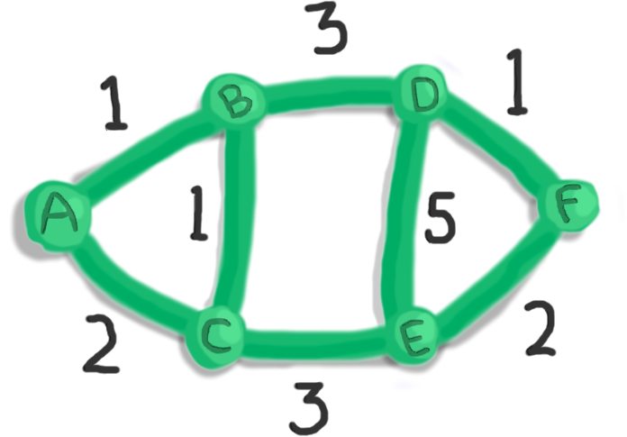
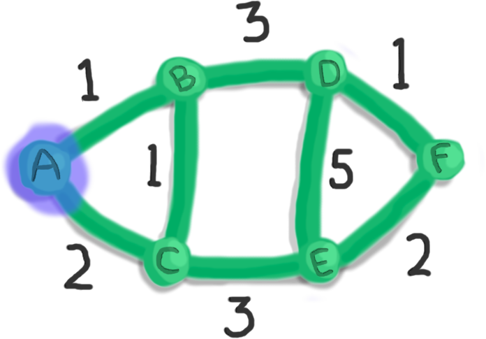
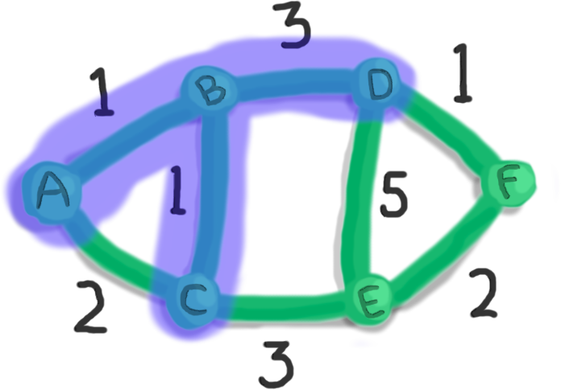
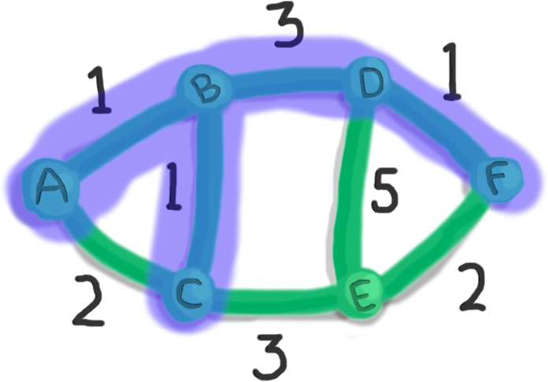
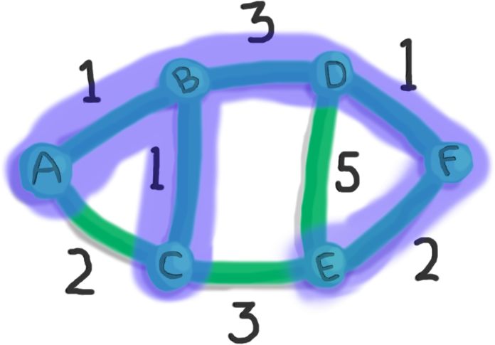
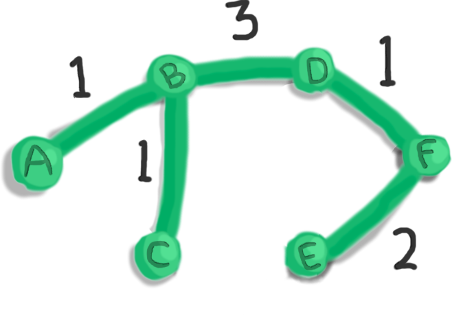

Prim's Algorithm
Prim's algorithm finds a minimum spanning tree of a graph.
In other words, Prim's algorithm outputs a subset of edges (of a given graph) such that:
- the total edge weight is minimized (minimum)
- all vertices are includes (spanning)
- there is exactly one path between any pair of vertices (tree)
How Prim's Algorithm Works
Prim's algorithm starts with an empty set of vertices and edges. It gradually builds the minimum spanning tree by gobbling up one edge and one vertex at a time.
- Pick a random vertex. Add it to the set of vertices.
- Out of the edges connecting a chosen vertex to an unchosen vertex, find the edge with the minimum weight. We add that edge and its connecting unchosen vertex to the tree.
- Repeat 2 until all vertices are included in the tree.
Greedy Algorithm
Prim's algorithm is a greedy algorithm. This is because it repeatedly makes a greedy decision (at step 2).
Monster Analogy
I like to think of Prim's algorithm as a gassy monster that wants to eat all the vertices. And it does so by spreading its toxic gas from one vertex to another, making sure it spends as less gas as possible.
Example Walkthrough
Let's walk through an example.
We'll use the Prim's algorithm to find a minimum spanning tree of the graph below.
First, pick any vertex. Let's pick A.
Now, take a look at the edges connecting our chosen vertices (A) to unchosen vertices:
- the edge from A to B of weight 1
- the edge from A to C of weight 2
Out of these edges, we pick the one with minimum weight.
So let's pick the edge of weight 1 (A to B).
Now we choose between three edges:
- the edge from A to C of weight 2
- the edge from B to C of weight 1
- the edge from B to D of weight 3
The minimum weight is 1 — on the edge from B to C.
So let's gobble up that edge and vertex C.
At this point, we no longer care about the edge from A to C.
This is because we've already collected vertices A and C.
So we will decide between:
- the edge from B to D of weight 3
- the edge from C to E of weight 3
But we have a tie! Both edges have a weight of 3.
When there is a tie for the minimum weight, we can pick any of the edges in the tie. Let's go with the edge from B to D of weight 3.
Let's keep going...
There are three edges to choose from with weights 1, 3, and 5. The edge from D to F of weight 1 is the winner.
... and we keep going ...
We pick the edge from F to E of weight 2.
Finally, we've collected all the vertices! Thus, we have our minimum spanning tree.
